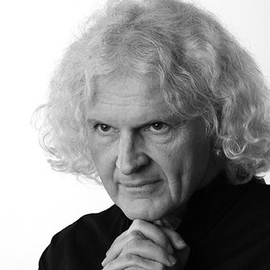
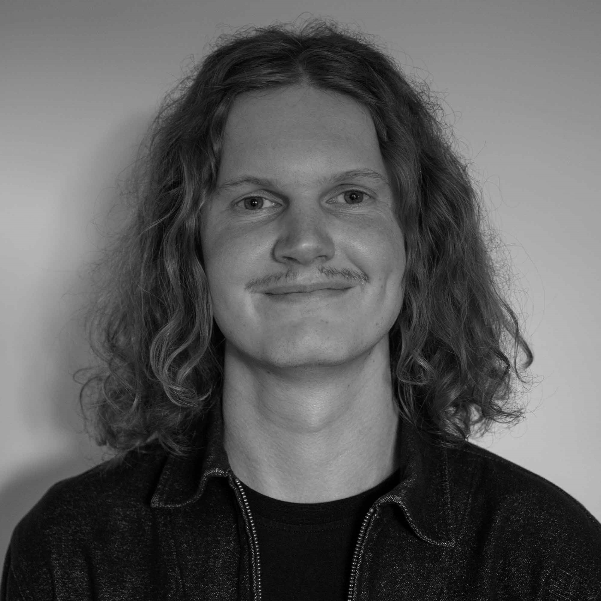

Professional Products Need Professional Design.
This statement is our motivation. A product is only able to gain the user’s full trust if it exudes reliability and sophistication. After all, an impressive, high-quality appearance is the first effective communication of technical performance.
We reveal what's inside, showcasing both technical excellence and visual sophistication at the highest level. Striking aesthetics and a distinctive character command attention and leave a lasting impression. Unique features highlight the product’s exclusivity and infuse the design with a strong sense of individuality. This clearly sets our products apart from the competition, while the consistent creativity across the product line strengthens the brand’s identity.
The balance of technical performance, design and environmental compatibility is our current challenge.
Sustainable design reflects the Zeitgeist, marking the end of wasteful, short-lived trends. Expressive contours, aesthetic lightness, timeless form, and harmonious proportions give the product a healthy, appealing presence that brings long-lasting enjoyment to users. A conscious, responsible approach to material use conserves valuable resources and minimizes energy waste.


Team

Mario Selić
Office AugsburgMario Selić founded Selić Industriedesign in 1995 and quickly became a renowned industrial designer in robotics and home appliances. In addition to his professional work, Mario Selić has served as a guest lecturer in Seoul, South Korea, and as a jury member for the Red Dot Design Award.

Tino Selić
Office HelsinkiWith a background in New Media, Tino Selić specializes in a diverse range of creative and technical disciplines. He approaches technology sensitively and critically—highlighting the ethical dimensions of automation and advocating for design practices that account for both human and non-human agencies.